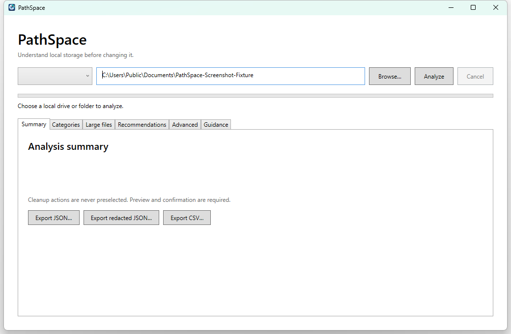
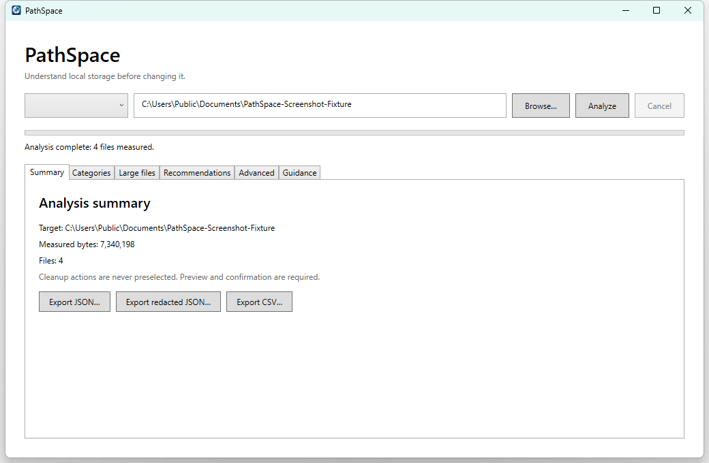
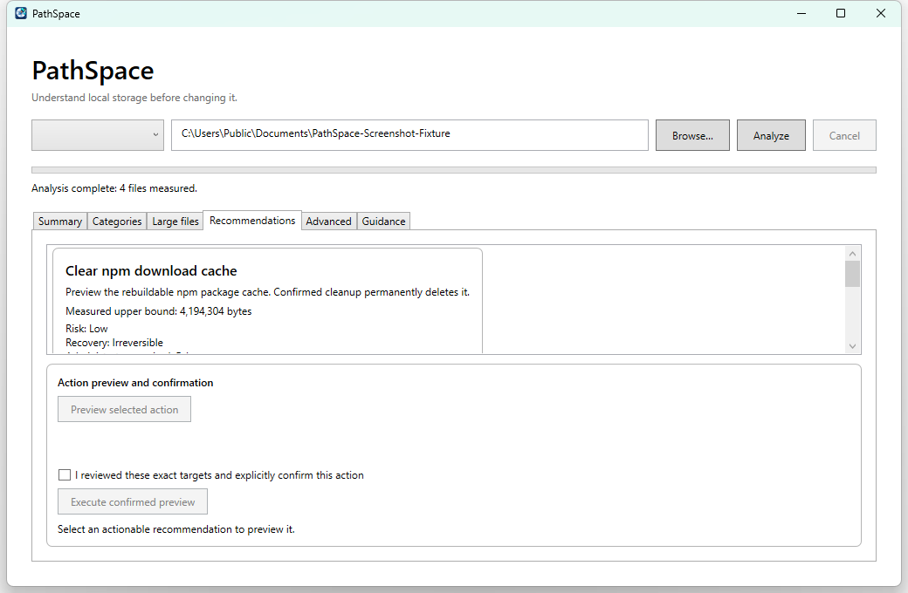

Windows installer
Offline MSI with the .NET 8 Desktop Runtime included, Start-menu registration, and standard Windows uninstall support.
Download installerPrivate preview · Windows 10/11 x64
PathSpace analyzes local drives and folders, explains the evidence, and keeps every cleanup action behind a precise preview and explicit confirmation.
Analyze → Understand → Preview → Confirm
Downloads
Both packages are version 0.1.0-private for Windows x64. Checksums are published with the release.
Offline MSI with the .NET 8 Desktop Runtime included, Start-menu registration, and standard Windows uninstall support.
Download installerExtract and run without installation. Requires the Microsoft .NET 8 Desktop Runtime already installed.
Download portable ZIPHow it works
Choose a fixed drive, removable drive, or individual local folder.
Review categorized usage, large files, warnings, and protected-storage diagnostics.
Compare evidence-based recovery recommendations and their risk labels.
Preview exact targets before any allow-listed cleanup action can run.
Documentation
Install, analyze, understand results, use the CLI, and make safe recovery decisions from this guide.
Getting started
Download the MSI, verify its checksum, open it, and follow Windows Installer. The package includes the .NET 8 Desktop Runtime and adds PathSpace to the Start menu.
Download the ZIP, verify its checksum, extract the complete folder, and run PathSpace.App.exe. Install the .NET 8 Desktop Runtime first if Windows requests it.
Interface guide
Real packaged PathSpace UI captured with disposable sample data.

Target path — type or paste a local drive or folder.
Browse — choose a local folder with Windows Explorer.
Analyze — begin the read-only scan.
Cancel — stop safely and retain partial read-only results.
Result tabs — move between summary, files, recommendations, diagnostics, and guidance.
Reading results

Status — confirms completion, cancellation, warnings, or safe failure.
Summary — shows the exact target, measured bytes, and file count.
Exports — save JSON, redacted JSON, or CSV locally.
Categories and large files — inspect and filter evidence without changing files.
High-level measurements and local export controls.
Aggregated folder usage with path filtering.
Largest measured files, sizes, and modification dates.
Evidence-based recovery choices with risk and reversibility.
Optional raw warnings and protected read-only diagnostics.
Safe application-specific instructions for complex storage.
Safe cleanup

Recommendation — review measured upper bound, risk, reversibility, and elevation.
Preview action — calculate exact targets without changing them.
Explicit confirmation — acknowledge the exact preview; it is never preselected.
Execute — stays disabled until preview and confirmation are valid.
Advanced — protected diagnostics request elevation only when selected.
Only narrow allow-listed actions can execute, such as clearing a known rebuildable cache. Every action uses a short-lived manifest and verifies the result.
Docker volumes, WSL distributions, Notion partitions, Claude runtime data, and pagefile settings are never blindly deleted.
The main app runs normally. Protected scans and actions use a separate short-lived worker and require Windows approval.
Scans, exports, audit records, and reports stay on the computer. PathSpace has no telemetry, account, or network scanner.
Command line
The portable package includes the same read-only engine used by the GUI. Run it from Windows PowerShell or PowerShell 7:
powershell -NoProfile -ExecutionPolicy Bypass -File .\cli\pathspace.ps1 `
scan --path "D:\Projects"Output is versioned JSON Lines: progress records arrive during the scan, followed by the final snapshot. Use --large-file-threshold-bytes to change the large-file threshold and --output to write JSONL locally. Press Ctrl+C to request safe cancellation.
Troubleshooting
Version 0.1.0-private is intentionally labeled unsigned. Verify the published SHA-256 checksum before running. Production signing remains a tracked release gate.
Install the Microsoft .NET 8 Desktop Runtime for Windows x64, or use the MSI, which embeds the required runtime.
Access-denied and disappearing-file warnings are expected during a live scan. PathSpace continues safely and reports what it could measure.
Select an actionable recommendation, build its preview, inspect every target, then select the explicit confirmation checkbox. Guided-only recommendations never enable execution.
No. Cancelling analysis returns partial read-only results and keeps cleanup execution disabled.
Release notes
Private preview · August 2026
This preview remains unsigned. Windows 10 validation and trusted signed installer lifecycle testing are still open.
Future work
Complete the external Windows 10 compatibility matrix.
Configure a production Authenticode certificate and trusted timestamp service.
Verify signed install, major upgrade, and uninstall on clean Windows 10 and 11 hosts.
Open source
PathSpace source code is available under the MIT License. You may use, copy, modify, merge, publish, distribute, sublicense, and sell copies while retaining the copyright and permission notice.
Third-party components retain their own licenses and notices inside the repository and packaged application.